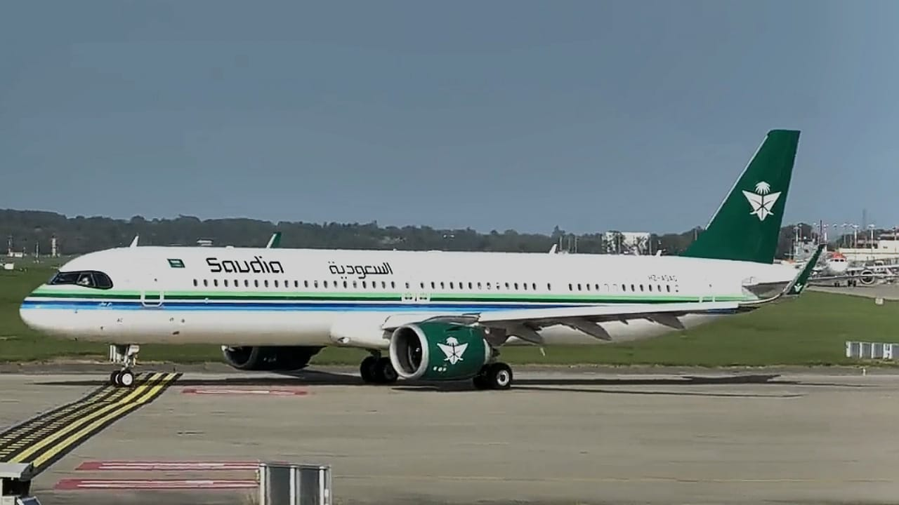

اكتشفي طائرة السعودية ✈️
وجّهي الكاميرا إلى صورة الطائرة، واستكشفي نموذجًا ثلاثي الأبعاد بألوان الخطوط السعودية. لفّي الطائرة وكبّريها واضغطي على أجزائها.

طريقة التجربة: افتحي صورة الطائرة على جهاز آخر أو اطبعيها، ثم افتحي الموقع على جوالك ووجهي الكاميرا للصورة. لتجربة الدوران بدون كاميرا اختاري «استكشفي الطائرة 3D».
مهم: يجب إنشاء ملف
targets.mind من الصورة باستخدام أداة MindAR وإضافته إلى مجلد assets أولًا لتعمل خاصية التعرف على الصورة. التفاصيل في README.